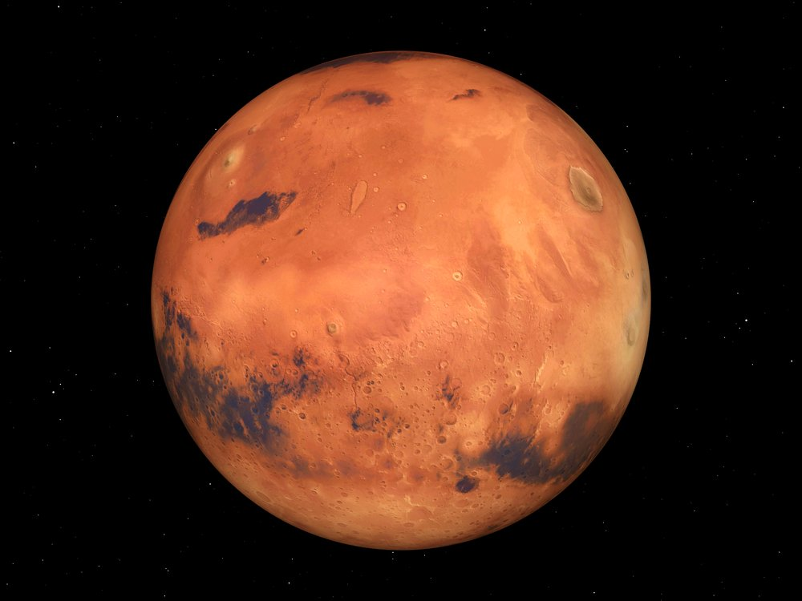

Mars is a cold desert world. It is half the diameter of Earth and has the same amount of dry land. Like Earth, Mars has seasons, polar ice caps, volcanoes, canyons and weather, but its atmosphere is too thin for liquid water to exist for long on the surface. There are signs of ancient floods on Mars, but evidence for water now exists mainly in icy soil and thin clouds.
10 Need-to-Know Things About the Mars:
- If the sun were as tall as a typical front door, Earth would be the size of a nickel, and Mars would be about as big as an aspirin tablet.
- Mars orbits our sun, a star. Mars is the fourth planet from the sun at a distance of about 228 million km (142 million miles) or 1.52 AU.
- One day on Mars takes just a little over 24 hours (the time it takes for Mars to rotate or spin once). Mars makes a complete orbit around the sun (a year in Martian time) in 687 Earth days.
- Mars is a rocky planet, also known as a terrestrial planet. Mars' solid surface has been altered by volcanoes, impacts, crustal movement, and atmospheric effects such as dust storms.
- Mars has a thin atmosphere made up mostly of carbon dioxide (CO2), nitrogen (N2) and argon (Ar).
- Mars has two moons named Phobos and Deimos.
- There are no rings around Mars.
- More than 40 spacecraft have been launched for Mars, from flybys and orbiters to rovers and landers that touched surface of the Red Planet. The first true Mars mission success was Mariner 4 in 1965.
- At this time in the planet's history, Mars' surface cannot support life as we know it. A key science goal is determining Mars' past and future potential for life.
- Mars is known as the Red Planet because iron minerals in the Martian soil oxidize, or rust, causing the soil -- and the dusty atmosphere -- to look red.